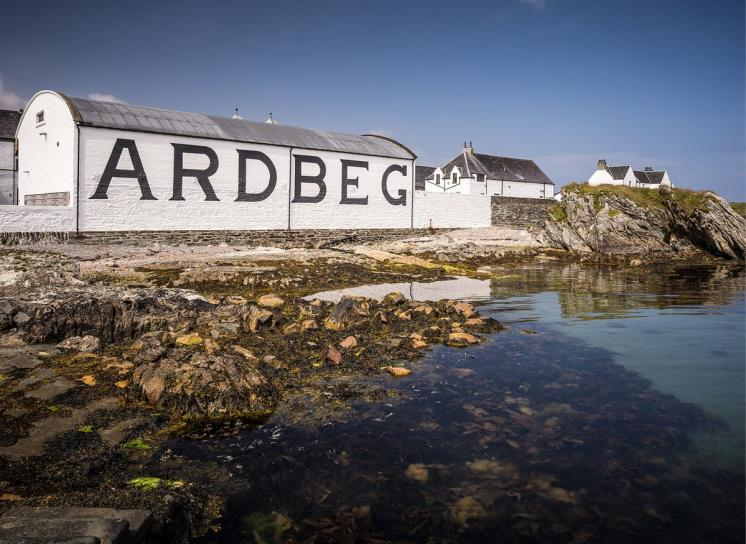
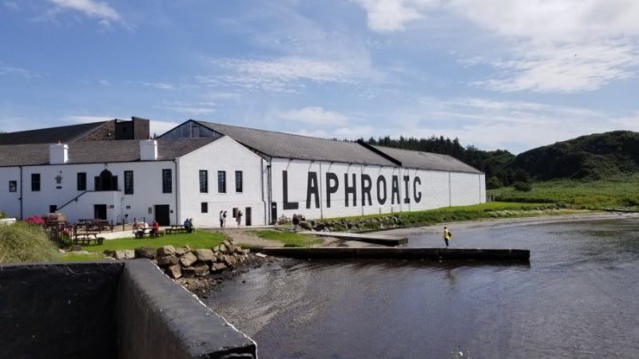
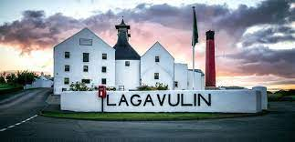

Ardbeg
Ardbeg Distillery는 1815년에 설립된 유명한 피트 위스키 증류소로, 강한 피트 향과 독특한 맛으로 전 세계적으로 사랑받고 있습니다.
Laphroaig
Laphroaig Distillery는 1815년에 설립된 증류소로, 강렬한 피트 향과 스모키한 맛이 특징입니다. 많은 위스키 애호가들에게 인기를 끌고 있습니다.
Lagavulin
Lagavulin Distillery는 1816년에 설립된 증류소로, 깊고 풍부한 피트 향과 복합적인 맛이 특징입니다. 전통적인 위스키 제조 방식을 고수하고 있습니다.